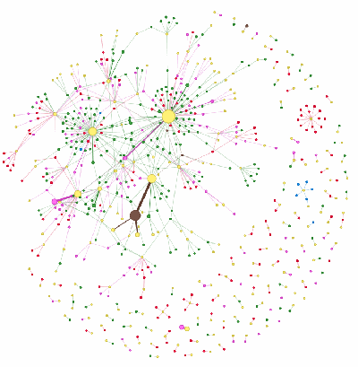
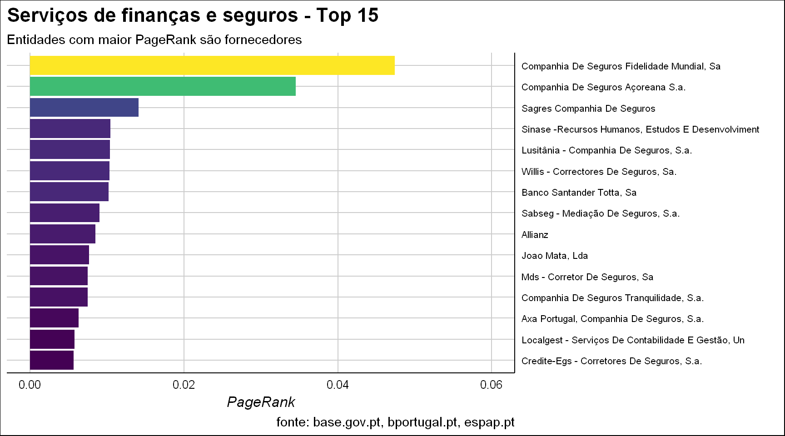
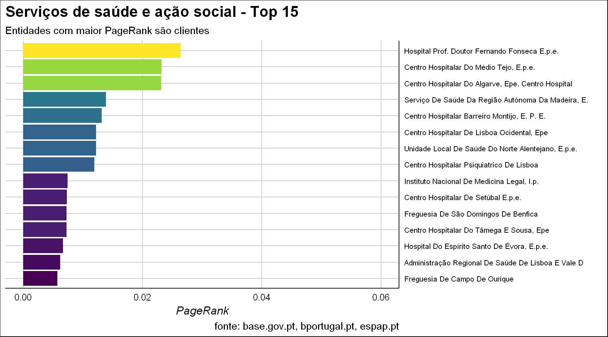

By António Cruz | April 24, 2017

O BASE é um portal na internet assegurado pelo Instituto dos Mercados Públicos do Imobiliário e da Construção (IMPIC), dedicado aos contratos públicos, que agrega informação sobre a contratação pública e dá cumprimento ao código dos contratos públicos (CCP).
As bases de dados ligadas ao portal são alimentadas, permanentemente, pela informação transmitida a partir do Diário da República Eletrónico, das plataformas eletrónicas de contratação pública e das entidades adjudicantes.
O BASE constitui, do meu ponto de vista, uma excelente iniciativa e instrumento para todos nós, nomeadamente para a transparência e conhecimento da administração pública. Foi do BASE que foi extraída a informação principal para a análise do presente artigo.
Poderão consultar o portal em Base: Contratos públicos online e podem também consultar aqui um exemplo da informação típica de um contrato (escolha do exemplo foi totalmente aleatória).
Este será o primeiro artigo com base em dados públicos do portal BASE, mas conto no futuro fazer outras análises, pois considero que existe uma grande riqueza e potencial nos dados recolhidos e disponibilizados.
O portal disponibiliza relatórios sobre a contratação pública, nomeadamente sínteses mensais e relatórios anuais que poderão consultar aqui. Estes relatórios são bastante detalhados e exaustivos.
A minha perspetiva é analisar os dados de forma diferente e que possa complementar e acrescentar valor aos estudos já efetuados.
O objetivo é demonstrar como poderemos retirar valor dos dados utilizando ferramentas e técnicas que acrescentam valor e não focar nos dados especificos do cliente A ou fornecedor B (apesar do cuidado no processamento das transformações efetuadas, poderão existir erros).
Alguns pontos relevantes para a presente e futuras análises:
Os contratos possuem duas datas relevantes: a data de comunicação e a data de contratualização;
Em alguns casos o contrato é comunicado depois de passado mais de um ano da sua celebração;
Dos dois pontos anteriores resulta que a análise dos contratos num determinado período temporal nunca está fechada pois ainda poderá vir a ser comunicado um contrato relativo ao período analisado. Por exemplo, se estivermos hoje a analisar os contratos celebrados em 2016 e voltarmos a repetir essa análise daqui a um mês, os valores serão diferentes porque foram, entretanto, comunicados mais contratos para esse período;
Os dados reportam-se a contratos e não a custos (numa ótica patrimonial) ou cabimentos e compromissos do ano (numa ótica orçamental). Isto tem claramente implicações em analises que comparam anos ou períodos temporais pois em contratos relacionados com grandes investimentos (construção ou grandes projetos de consultoria e TI), pode ter sido realizado em 2015 um contrato de grande valor mas que tem uma duração estimada de, por exemplo, 3 anos. Essa entidade, provavelmente, não terá contratos do mesmo tipo em 2016.
Os dados que constam da presente análise reportam-se aos contratos comunicados até às 19h do dia 18 de abril de 2017 e apenas incluem os contratos celebrados em 2016;
Os dados, depois de extraídos, foram transformados para corrigir algumas situações relevantes para as análises, nomeadamente:
Consolidação do nome das entidades. Várias entidades, nomeadamente fornecedores, existem no portal com diferentes nomes, i.e., para o mesmo NIF o fornecedor aparece em diferentes contratos com nomes diferentes. Como exemplo temos “Agencia Abreu”, “AGÊNCIA ABREU - VIAGENS ABREU, S.A.”, “Agência Abreu, S. A.”, etc;
Existiam contratos cujo adjudicante (cliente), não estava identificado. Esses contratos foram removidos;
Em alguns contratos existem duas ou mais entidades adjudicantes (clientes). Nestas situações, o valor atribuido a cada cliente é igual ao valor do contrato a dividir pelo número de clientes;
Em alguns contratos existem duas ou mais entidades adjudicatárias (fornecedores). Nestas situações, o valor atribuido a cada fornecedor é igual ao valor do contrato a dividir pelo número de fornecedores;
Adicionalmente foram utilizadas outras fontes de informação públicas, nomeadamente:
Vocabulário publico para os contratos públicos. A informação foi retirada daqui;
Listagem de entidades públicas, de forma a normalizar o nome das mesmas, informação extraída das listagens de entidades para fins estatísticos do Banco de Portugal - SEC2010 (consultar aqui)
Com base na informação anterior, foram classificados os organismos em função do detentor e setor da entidade (se é administração central, local ou regional, por exemplo). Infelizmente ficaram de fora muitos organismos, nomeadamente escolas e agrupamento de escolas, que não constavam das listagens do Banco de Portugal.
Conceitos da teoria dos grafos
Não pretendo cansar-vos com conceitos teóricos e exaustivos, mas julgo ser relevante esclarecer alguns conceitos básicos que ajudam a analisar as dinâmicas em grafos:
Um grafo possuiu dois objetos distintos: vértices (ou nós) e arestas (ou arcos);
Uma aresta liga dois vértices e podemos concetualiza-las como estradas que ligam cidades;
Nesta análise os vértices são entidades (clientes e fornecedores) e as arestas são relações contratuais entre duas entidades (se existiu um contrato). As arestas são definidas pela soma do valor contratual dos contratos celebrados em 2016. Assim, se existe uma aresta entre duas entidades é porque ocorreu pelo menos um contrato, em 2016, entre essas duas entidades;
Um dos objetivos fundamentais do SNA (“Social network analysis”) é identificar os vértices centrais de um grafo. A questão que se coloca é como se mede essa centralidade. O que significa ser central num grafo? Existem várias formas, mas irei apenas focar na centralidade baseada no grau;
- O grau define o número de arestas ligadas ao vértice. No nosso caso, o grau define o número de relações (leia-se entidades) que estabeleceram contratos com a entidade em análise. Por exemplo, se uma determinada entidade tiver um grau de 10, isso significa que estabeleceu contratos em 2016 com 10 entidades;
Para efeitos de medição de centralidade, um “ator” central no grafo é aquele que tem muitas conexões;
PageRank: algoritmo da Google para classificar o valor das páginas. A Google interpreta uma ligação do vértice A para o B como um voto. Mas, adicionalmente, valoriza esse voto de forma diferenciada, i.e., analisa a importância do vértice que “vota”. Assim, “votos” de vértices importantes pesam mais que outros vértices.
Da teoria à prática
Passando da teoria à prática irei analisar duas divisões do vocabulário público para os contratos públicos, a saber:
Serviços de finanças e seguros - 669 entidades (vertices);
Serviços de saúde e acção social - 1785 entidades (vertices).
Para vos ajudar, deixo aqui algumas dicas para quando estiverem a consultar os grafos:
com o cursor em cima do grafo, rodando a roda do rato, fazem zoom sobre o grafo;
o tamanho dos vertices (entidades) representam o valor relativo dos contratos celebrados por essa entidade em 2016;
a largura das arestas representa o valor relativo dos contratos celebrados entre as entidades que estão na ponta dessa aresta;
ao passarem o cursor por cima de um vértice ou entidade, podem ver informação detalhada sobre o objeto, nomeadamente nº e valor dos contratos celebrados;
se clicarem num vértice (entidade), todos os outros vértices e arestas para além do segundo nível de ligação a esse vértice, ficam cinzentos (para melhor visualização);
se clicarem no botão esquerdo do rato num espaço em branco do grafo e, sem deixar de clicar, arrastarem o rato, todos as arestas desaparecem o que permite visualizar melhor a entidades e o seu peso relativo em termos de valor de contrato;
no canto superior esquerdo podem selecionar o tipo de entidade e ver onde elas estão no grafo;
por vezes o algoritmo de desenho deixa alguns vértices sobrepostos. Poderão sempre tentar corrigir esta situação clicando num vértice, e sem deixar de clicar, arrastar o vértice para outro local;
procurem entidades que liguem dois clusters (agrupamentos) de entidades;
procurem entidades afastadas, com poucas ligações, e valores significativos (representam normalmente situações muito especificas);
procurem clusters (agrupamentos) afastados do centro (por vezes apresentam especificidades geográficas ou de negócio);
procurem centros de agrupamentos que são fornecedores (um fornecedor com muitos clientes), o que poderá significar um poder negocial forte do fornecedor;
procurem centros de agrupamentos que são clientes (um cliente com muitos fornecedores), o que poderá significar um poder negocial forte do cliente.
Antes de vos desejar uma boa caçada, peço que tenham paciência quando a página do grafo for carregada. Dependendo da vossa ligação à net e das capacidades gráficas do vosso PC, pode demorar algum tempo a fazer o rendering da página (de qualquer forma, não espero que demore mais de 2 a 4 segundos).
Boa caçada.
Grafos, finalmente.
Como podem verificar, consegue-se perceber facilmente pelas cores dos vértices qual o setor onde os fornecedores possuem mais poder.
Os fornecedores dos bens e serviços são os vértices amarelos e no caso dos serviços de finanças e seguros são o centro dos pequenos clusters que se formaram (com a exceção do Instituto de Gestão Financeira da Segurança Social).
No caso dos serviços de saúde e ação social, as entidades que não são fornecedores são o centro dos pequenos clusters que se formaram.
Calculando a centralidade global dos grafos baseadas no grau, temos um valor de 0.1247 para os serviços de finanças e seguros e um valor de 0.0618 para os serviços de saúde e ação social.
Este valor de centralidade varia entre 0 e 1 e ele é tanto maior quanto um vértice tem o maior grau possível (nº de vértices menos 1) e os restantes vértices possuem o menor grau possível.
Com base no grau, a centralidade do grafo relativo aos serviços de finanças e seguros é o dobro da dos serviços de saúde e ação social.
Podemos também verificar que quando comparamos as entidades individualmente com base no seu pageRank, para os dois grafos, a dos serviços de finanças e seguros é constituída por fornecedores e a dos serviços de saúde e ação social é por clientes.


Conclusões
Os grafos são excelentes ferramentas para analisar dinâmicas entre entidades ou objetos, onde o número e complexidade das relações é elevada.
Para além dos exemplos dados, eles poderão ser utilizados para analisar:
a dinâmica das redes sociais;
ajudar na gestão dos recursos humanos (é relativamente fácil medir os emails entre pessoas numa organização e perceber a centralidade e desempenho dos trabalhadores);
trafego em redes de computadores para otimização da distribuição de carga e localização dos dados;
em gestão de projetos, considerando as tarefas como vértices;
atividades desportivas de grupo, considerando os jogadores como vértices e os passes entre eles como arestas;
análise macroeconómica em que os vértices são setores da economia e as arestas fluxos monetários entre eles;
na saúde em que os vértices são doentes e médicos (ou especialidades, ou outros recursos).
Espero que tenham achado o artigo interessante e se tiverem sugestões ou comentários a fazer, não hesitem.